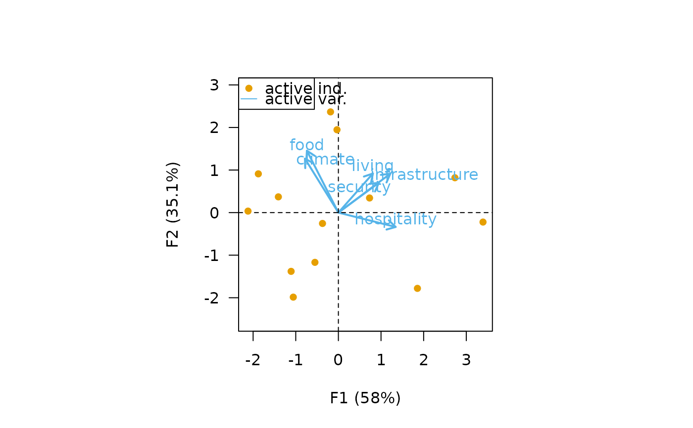
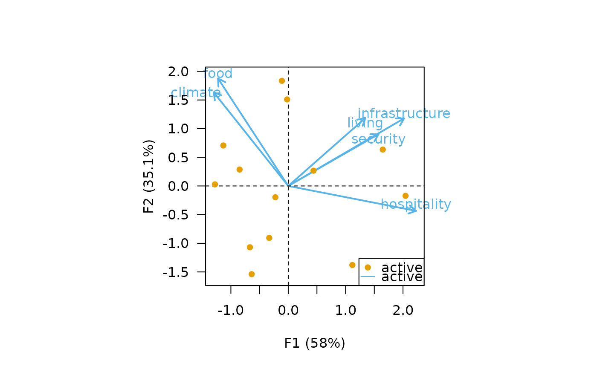
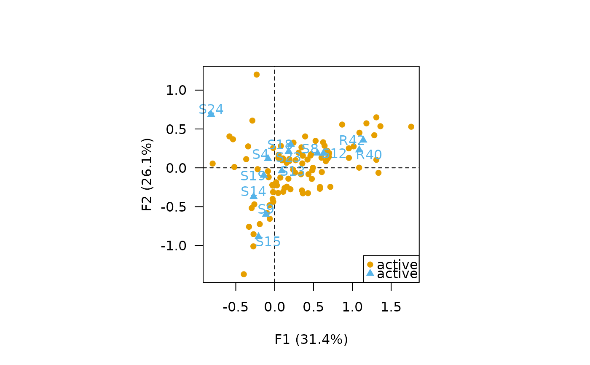
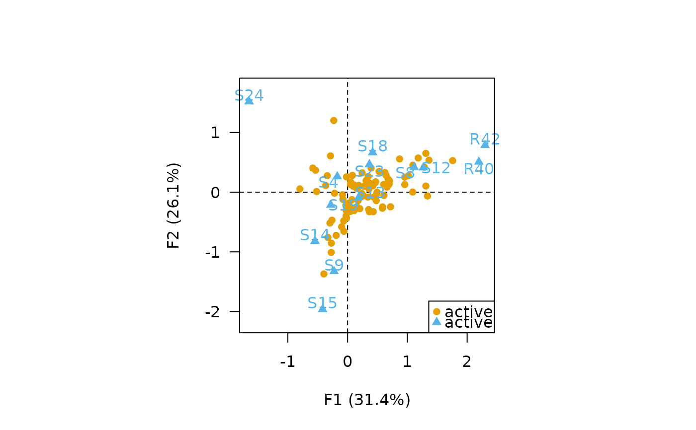
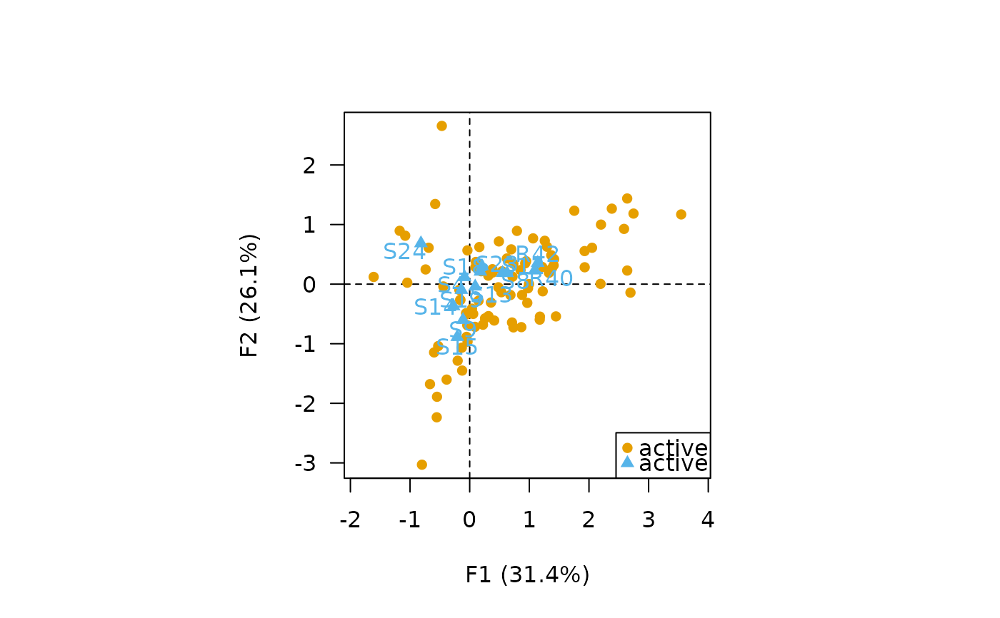
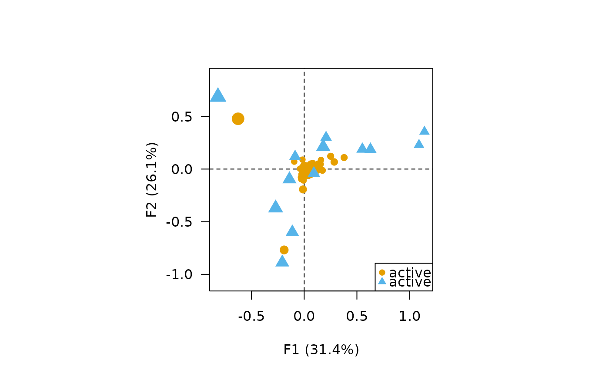

Biplot
Usage
# S4 method for CA
biplot(
x,
...,
axes = c(1, 2),
type = c("symetric", "rows", "columns", "contributions"),
active = TRUE,
sup = TRUE,
labels = NULL,
col.rows = c("#E69F00", "#009E73"),
col.columns = c("#56B4E9", "#F0E442"),
cex.rows = graphics::par("cex"),
cex.columns = graphics::par("cex"),
pch.rows = 16,
pch.columns = 17,
xlim = NULL,
ylim = NULL,
main = NULL,
sub = NULL,
legend = list(x = "topleft")
)
# S4 method for PCA
biplot(
x,
...,
axes = c(1, 2),
type = c("form", "covariance"),
active = TRUE,
sup = TRUE,
labels = "variables",
col.rows = c("#E69F00", "#009E73"),
col.columns = c("#56B4E9", "#F0E442"),
pch = 16,
cex = 1,
lty = 1,
lwd = 2,
xlim = NULL,
ylim = NULL,
main = NULL,
sub = NULL,
legend = list(x = "topleft")
)Arguments
- x
- ...
Currently not used.
- axes
A length-two
numericvector giving the dimensions to be plotted.- type
A
characterstring specifying the biplot to be plotted (see below). It must be one of "rows", "columns", "contribution" (CA), "form" or "covariance" (PCA). Any unambiguous substring can be given.- active
A
logicalscalar: should the active observations be plotted?- sup
A
logicalscalar: should the supplementary observations be plotted?- labels
A
charactervector specifying whether "rows"/"individuals" and/or "columns"/"variables" names must be drawn. Any unambiguous substring can be given.- col.rows
A length-two
vectorof color specification for the active and supplementary rows.- col.columns
A length-two
vectorof color specification for the active and supplementary columns.- xlim
A length-two
numericvector giving the x limits of the plot. The default value,NULL, indicates that the range of the finite values to be plotted should be used.- ylim
A length-two
numericvector giving the y limits of the plot. The default value,NULL, indicates that the range of the finite values to be plotted should be used.- main
A
characterstring giving a main title for the plot.- sub
A
characterstring giving a subtitle for the plot.- legend
A
listof additional arguments to be passed tographics::legend(); names of the list are used as argument names. IfNULL, no legend is displayed.- pch, pch.rows, pch.columns
A symbol specification.
- cex, cex.rows, cex.columns
A
numericvector giving the amount by which plotting characters and symbols should be scaled relative to the default.- lty, lwd
A specification for the line type and width.
Value
biplot() is called for its side-effects: it results in a graphic being
displayed. Invisibly returns x.
Details
A biplot is the simultaneous representation of rows and columns of a rectangular dataset. It is the generalization of a scatterplot to the case of mutlivariate data: it allows to visualize as much information as possible in a single graph (Greenacre 2010).
Biplots have the drawbacks of their advantages: they can quickly become difficult to read as they display a lot of information at once. It may then be preferable to visualize the results for individuals and variables separately.
PCA Biplots
form(row-metric-preserving)The form biplot favors the representation of the individuals: the distance between the individuals approximates the Euclidean distance between rows. In the form biplot the length of a vector approximates the quality of the representation of the variable.
covariance(column-metric-preserving)The covariance biplot favors the representation of the variables: the length of a vector approximates the standard deviation of the variable and the cosine of the angle formed by two vectors approximates the correlation between the two variables. In the covariance biplot the distance between the individuals approximates the Mahalanobis distance between rows.
CA Biplots
symetric(symetric biplot)Represents the row and column profiles simultaneously in a common space: rows and columns are in standard coordinates. Note that the the inter-distance between any row and column items is not meaningful.
rows(asymetric biplot)Row principal biplot (row-metric-preserving) with rows in principal coordinates and columns in standard coordinates.
columns(asymetric biplot)Column principal biplot (column-metric-preserving) with rows in standard coordinates and columns in principal coordinates.
contribution(asymetric biplot)Contribution biplot with rows in principal coordinates and columns in standard coordinates multiplied by the square roots of their masses.
References
Aitchison, J. and Greenacre, M. J. (2002). Biplots of Compositional Data. Journal of the Royal Statistical Society: Series C (Applied Statistics), 51(4): 375-92. doi:10.1111/1467-9876.00275 .
Greenacre, M. J. (2010). Biplots in Practice. Bilbao: Fundación BBVA.
See also
Other plot methods:
screeplot(),
viz_contributions(),
viz_individuals(),
viz_variables(),
viz_wrap,
wrap
Examples
## Replicate examples from Greenacre 2007, p. 59-68
data("countries")
## Compute principal components analysis
## All rows and all columns obtain the same weight
row_w <- rep(1 / nrow(countries), nrow(countries)) # 1/13
col_w <- rep(1 / ncol(countries), ncol(countries)) # 1/6
Y <- pca(countries, scale = FALSE, weight_row = row_w, weight_col = col_w)
## Row-metric-preserving biplot (form biplot)
biplot(Y, type = "form")

## Column-metric-preserving biplot (covariance biplot)
biplot(Y, type = "covariance", legend = list(x = "bottomright"))

## Replicate examples from Greenacre 2007, p. 79-88
data("benthos")
## Compute correspondence analysis
X <- ca(benthos)
## Symetric CA biplot
biplot(X, labels = "columns", legend = list(x = "bottomright"))

## Row principal CA biplot
biplot(X, type = "row", labels = "columns", legend = list(x = "bottomright"))

## Column principal CA biplot
biplot(X, type = "column", labels = "columns", legend = list(x = "bottomright"))

## Contribution CA biplot
biplot(X, type = "contrib", labels = NULL, legend = list(x = "bottomright"))
